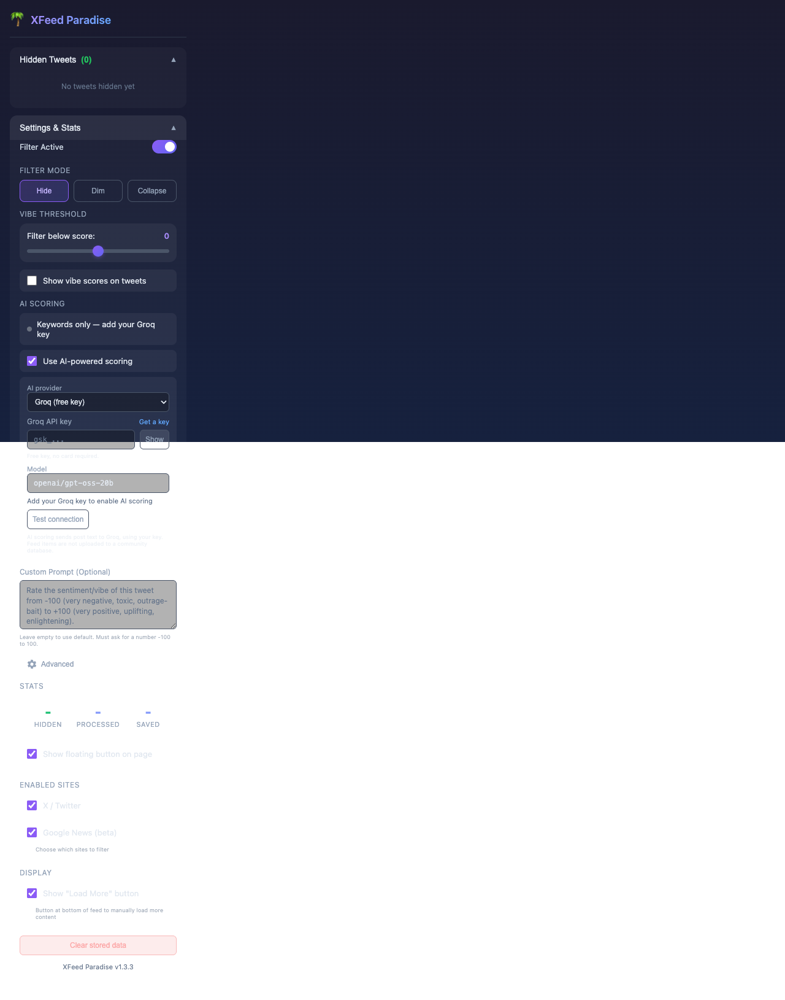
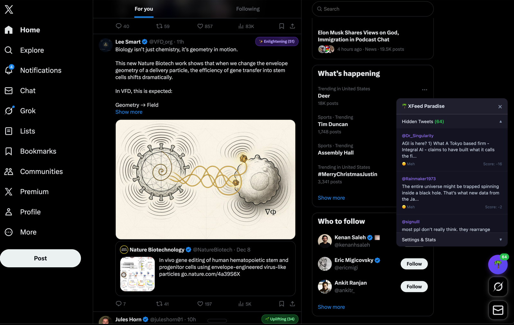
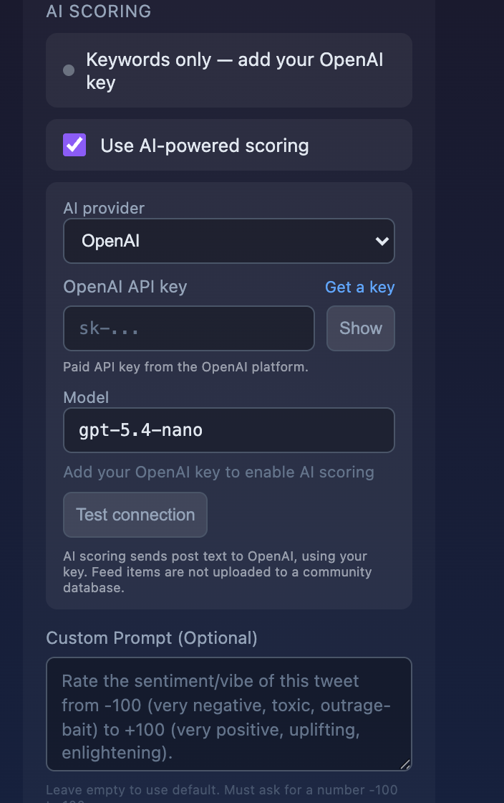

XFeed Paradise is a free, open-source Chrome extension. It scores each post on X/Twitter and Google News from −100 (outrage-bait) to +100 (uplifting, thoughtful), then hides, dims, or collapses the ones below your threshold.
Move the vibe slider to choose your threshold. Posts below it are hidden, dimmed, or collapsed — you decide.


Works directly on x.com, twitter.com and Google News.
Hide, dim (hover to reveal), or collapse with a “Show anyway” button.
Keyword scoring runs locally with no setup. Add your own AI key (Groq is free; OpenAI, Anthropic, Gemini and others work too) for smarter scoring.
No account, no community upload. Seen posts stay in your browser.
Why the manual steps? XFeed Paradise isn’t in the Chrome Web Store yet, so Chrome needs you to load it yourself once. This takes about two minutes.
Download xfeed-paradise-v1.3.3.zip, then double-click it to unzip. Move the unzipped folder somewhere permanent, like Documents. Chrome loads it from that folder, so don’t delete it.
Paste chrome://extensions into the address bar and press Enter. Chrome blocks direct links to this page, so you need to paste it.
Use the toggle in the top-right corner of that page.
Select the unzipped folder (the one that contains manifest.json). XFeed Paradise appears in your list. Pin it from the puzzle-piece menu for easy access.
Go to x.com and scroll. Low-vibe posts start disappearing right away using keyword scoring.
Keyword scoring catches obvious outrage. For better judgment on subtle posts, connect an AI provider with your own API key. Use whichever one you already have.
Click the XFeed Paradise icon, open Settings & Stats, and choose one under AI provider. Chrome asks once for permission to contact it.
Each provider has a Get a key link. The model field is filled in with a fast, cheap default that you can change.
It scores one sample post. If the provider later fails or is rate-limited, the extension switches to your fallback provider (if you set one under Advanced), and after that to keyword scoring, and it tells you on the page.

The default. Free key, no card needed: console.groq.com/keys.
Already have an OpenAI, Anthropic (Claude) or Google AI Studio API key? Use it. Each post costs a tiny fraction of a cent.
One key gives you many models. Type any model name they offer.
A fast model built for scoring rather than chat. Early access at console.typesafe.ai.
Any OpenAI-compatible endpoint, including Ollama on your own machine (start it with OLLAMA_ORIGINS=chrome-extension://*).
Under Advanced, add a second provider to use if the first one fails. For example: Groq first, then OpenAI.
Without an AI key: nothing. With a key, the text of posts being scored is sent only to the provider you chose (and your fallback, if you set one). Your settings and keys are stored in Chrome sync storage, and posts you’ve seen are cached locally in your browser. There’s no community upload. Privacy policy.
Not yet. It’s for desktop Chromium browsers. Chrome on Android and iOS doesn’t support extensions, and no browser extension can filter the native X app.
Download the new ZIP from this page and unzip it over your existing folder. Then click the reload icon on XFeed Paradise’s card in chrome://extensions. Your settings are kept.
That’s normal for extensions loaded outside the Web Store. You can dismiss it. The full source is on GitHub if you want to check what it does.
Toggle filtering off in the popup, or click Remove on its card in chrome://extensions.